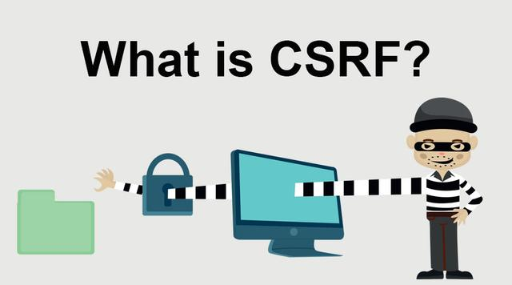

很多朋友在学习Spring Security的时候，会将CORS(跨站资源共享)和CSRF(跨站请求伪造)弄混，以为二者是一回事。其实不是，先解释一下：
当我们使用Spring Security的时候，这种CSRF漏洞默认的被防御掉了。但是你会发现在跨域请求的情况下，我们的POST、DELETE、PUT等HTTP请求方式失效了。所以在笔者之前的文章中，我们使用http.csrf.disable()暂时关闭掉了CSRF的防御功能，但是这样是不安全的，那么怎么样才是正确的做法呢？就是本文需要向大家介绍的内容。
通常的CSRF攻击方式如下：
首先，我们要先开启防护功能，在用户登陆操作之后，生成的CSRF Token就保存在cookies中。
public class WebSecurityConfig extends WebSecurityConfigurerAdapter {
@Override
protected void configure(HttpSecurity http) throws Exception {
http.csrf()
.csrfTokenRepository(CookieCsrfTokenRepository.withHttpOnlyFalse())
.ignoringAntMatchers("/authentication");
.and()
...
}
}至此，我们生成了CSRF token保存在了cookies中，浏览器向服务端发送的HTTP请求，都要将CSRF token带上，服务端校验通过才能正确的响应。这个校验的过程并不需要我们自己写代码实现，Spring Security会自动处理。但是我们需要关注前端代码，如何正确的携带CSRF token。
在thymeleaf模板中可以使用如下方式，在发送HTTP请求的时候携带CSRF Token。如果是前后端分离的应用，或者其他模板引擎，酌情从cookies中获取CSRF Toekn。
var headers = {};
headers['X-CSRF-TOKEN'] = "${_csrf.token}";
$.ajax({
headers: headers,
});$.ajax({
data: {
"_csrf": "${_csrf.token}"
}
});<input type="hidden" name="${_csrf.parameterName}" value="${_csrf.token}">